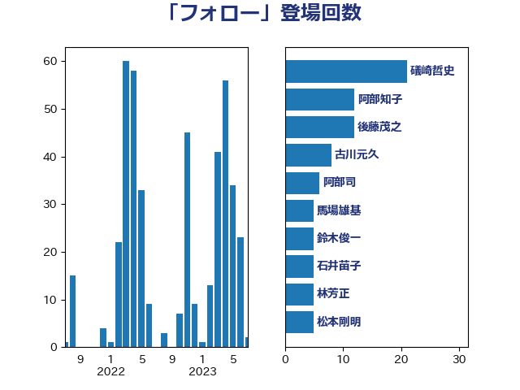

単語「フォロー」

| 礒崎哲史 | 国民民主党 | 21 回 |
| 阿部知子 | 立憲民主党 | 12 回 |
| 後藤茂之 | 自由民主党 | 12 回 |
| 古川元久 | 国民民主党 | 8 回 |
| 阿部司 | 日本維新の会 | 6 回 |
| 馬場雄基 | 立憲民主党 | 5 回 |
| 鈴木俊一 | 自由民主党 | 5 回 |
| 石井苗子 | 日本維新の会 | 5 回 |
| 林芳正 | 自由民主党 | 5 回 |
| 松本剛明 | 自由民主党 | 5 回 |
| 宮崎雅夫 | 自由民主党 | 5 回 |
| 大塚耕平 | 国民民主党 | 5 回 |
| 加藤勝信 | 自由民主党 | 5 回 |
| 高市早苗 | 自由民主党 | 4 回 |
| 足立康史 | 日本維新の会 | 4 回 |
| 藤岡隆雄 | 立憲民主党 | 4 回 |
| 萩生田光一 | 自由民主党 | 4 回 |
| 田中健 | 国民民主党 | 4 回 |
| 河野太郎 | 自由民主党 | 4 回 |
| 梅村聡 | 日本維新の会 | 4 回 |
| 岡本あき子 | 立憲民主党 | 4 回 |
| 宮口治子 | 立憲民主党 | 4 回 |
| 住吉寛紀 | 日本維新の会 | 4 回 |
| 高木真理 | 立憲民主党 | 3 回 |
| 進藤金日子 | 自由民主党 | 3 回 |
| 西村康稔 | 自由民主党 | 3 回 |
| 葉梨康弘 | 自由民主党 | 3 回 |
| 福重隆浩 | 公明党 | 3 回 |
| 石田昌宏 | 自由民主党 | 3 回 |
| 湯原俊二 | 立憲民主党 | 3 回 |
| 池下卓 | 日本維新の会 | 3 回 |
| 末松信介 | 自由民主党 | 3 回 |
| 徳永久志 | 無所属 | 3 回 |
| 岸田文雄 | 自由民主党 | 3 回 |
| 山際大志郎 | 自由民主党 | 3 回 |
| 小山展弘 | 立憲民主党 | 3 回 |
| 小宮山泰子 | 立憲民主党 | 3 回 |
| 伊佐進一 | 公明党 | 3 回 |
| 井坂信彦 | 立憲民主党 | 3 回 |
| 上月良祐 | 自由民主党 | 3 回 |
| 鬼木誠 | 立憲民主党 | 2 回 |
| 高橋光男 | 公明党 | 2 回 |
| 長友慎治 | 国民民主党 | 2 回 |
| 道下大樹 | 立憲民主党 | 2 回 |
| 近藤昭一 | 立憲民主党 | 2 回 |
| 足立敏之 | 自由民主党 | 2 回 |
| 赤木正幸 | 日本維新の会 | 2 回 |
| 緒方林太郎 | 無所属 | 2 回 |
| 石川香織 | 立憲民主党 | 2 回 |
| 石川昭政 | 自由民主党 | 2 回 |
| 漆間譲司 | 日本維新の会 | 2 回 |
| 清水貴之 | 日本維新の会 | 2 回 |
| 沢田良 | 日本維新の会 | 2 回 |
| 江田憲司 | 立憲民主党 | 2 回 |
| 森本真治 | 立憲民主党 | 2 回 |
| 梅村みずほ | 日本維新の会 | 2 回 |
| 柳ヶ瀬裕文 | 日本維新の会 | 2 回 |
| 末次精一 | 立憲民主党 | 2 回 |
| 末松義規 | 立憲民主党 | 2 回 |
| 山本香苗 | 公明党 | 2 回 |
| 山口晋 | 自由民主党 | 2 回 |
| 天畠大輔 | れいわ新選組 | 2 回 |
| 大西健介 | 立憲民主党 | 2 回 |
| 吉田とも代 | 日本維新の会 | 2 回 |
| 伊藤孝恵 | 国民民主党 | 2 回 |
| 中島克仁 | 立憲民主党 | 2 回 |
| 三上えり | 立憲民主党 | 2 回 |
| 一谷勇一郎 | 日本維新の会 | 2 回 |
| 齋藤健 | 自由民主党 | 1 回 |
| 黄川田仁志 | 自由民主党 | 1 回 |
| 高良鉄美 | 無所属 | 1 回 |
| 高橋英明 | 日本維新の会 | 1 回 |
| 阿達雅志 | 自由民主党 | 1 回 |
| 長谷川岳 | 自由民主党 | 1 回 |
| 長妻昭 | 立憲民主党 | 1 回 |
| 重徳和彦 | 立憲民主党 | 1 回 |
| 遠藤敬 | 日本維新の会 | 1 回 |
| 谷川とむ | 自由民主党 | 1 回 |
| 谷公一 | 自由民主党 | 1 回 |
| 西田実仁 | 公明党 | 1 回 |
| 藤丸敏 | 自由民主党 | 1 回 |
| 若松謙維 | 公明党 | 1 回 |
| 舩後靖彦 | れいわ新選組 | 1 回 |
| 舟山康江 | 国民民主党 | 1 回 |
| 羽田次郎 | 立憲民主党 | 1 回 |
| 篠原孝 | 立憲民主党 | 1 回 |
| 竹詰仁 | 国民民主党 | 1 回 |
| 空本誠喜 | 日本維新の会 | 1 回 |
| 秋葉賢也 | 自由民主党 | 1 回 |
| 福島みずほ | 社会民主党 | 1 回 |
| 福岡資麿 | 自由民主党 | 1 回 |
| 福山哲郎 | 立憲民主党 | 1 回 |
| 石橋通宏 | 立憲民主党 | 1 回 |
| 石川博崇 | 公明党 | 1 回 |
| 石原正敬 | 自由民主党 | 1 回 |
| 石井拓 | 自由民主党 | 1 回 |
| 田村貴昭 | 日本共産党 | 1 回 |
| 田村憲久 | 自由民主党 | 1 回 |
| 田村まみ | 国民民主党 | 1 回 |
| 田島麻衣子 | 立憲民主党 | 1 回 |
| 生稲晃子 | 自由民主党 | 1 回 |
| 玄葉光一郎 | 立憲民主党 | 1 回 |
| 牧島かれん | 自由民主党 | 1 回 |
| 渡辺博道 | 自由民主党 | 1 回 |
| 浮島智子 | 公明党 | 1 回 |
| 浜口誠 | 国民民主党 | 1 回 |
| 浅田均 | 日本維新の会 | 1 回 |
| 浅川義治 | 日本維新の会 | 1 回 |
| 泉健太 | 立憲民主党 | 1 回 |
| 河西宏一 | 公明党 | 1 回 |
| 永岡桂子 | 自由民主党 | 1 回 |
| 横山信一 | 公明党 | 1 回 |
| 森屋隆 | 立憲民主党 | 1 回 |
| 松野明美 | 日本維新の会 | 1 回 |
| 松原仁 | 立憲民主党 | 1 回 |
| 杉尾秀哉 | 立憲民主党 | 1 回 |
| 本庄知史 | 立憲民主党 | 1 回 |
| 早稲田ゆき | 立憲民主党 | 1 回 |
| 新妻秀規 | 公明党 | 1 回 |
| 斎藤嘉隆 | 立憲民主党 | 1 回 |
| 打越さく良 | 立憲民主党 | 1 回 |
| 庄子賢一 | 公明党 | 1 回 |
| 平木大作 | 公明党 | 1 回 |
| 工藤彰三 | 自由民主党 | 1 回 |
| 川田龍平 | 立憲民主党 | 1 回 |
| 川崎ひでと | 自由民主党 | 1 回 |
| 川合孝典 | 国民民主党 | 1 回 |
| 岡本三成 | 公明党 | 1 回 |
| 山本太郎 | れいわ新選組 | 1 回 |
| 山本剛正 | 日本維新の会 | 1 回 |
| 山崎正恭 | 公明党 | 1 回 |
| 山口壯 | 自由民主党 | 1 回 |
| 山井和則 | 立憲民主党 | 1 回 |
| 小沼巧 | 立憲民主党 | 1 回 |
| 小沢雅仁 | 立憲民主党 | 1 回 |
| 小林鷹之 | 自由民主党 | 1 回 |
| 小川淳也 | 立憲民主党 | 1 回 |
| 寺田稔 | 自由民主党 | 1 回 |
| 宮本徹 | 日本共産党 | 1 回 |
| 宮崎勝 | 公明党 | 1 回 |
| 守島正 | 日本維新の会 | 1 回 |
| 大石あきこ | れいわ新選組 | 1 回 |
| 大島九州男 | れいわ新選組 | 1 回 |
| 塩村あやか | 立憲民主党 | 1 回 |
| 塩崎彰久 | 自由民主党 | 1 回 |
| 城内実 | 自由民主党 | 1 回 |
| 城井崇 | 立憲民主党 | 1 回 |
| 坂本祐之輔 | 立憲民主党 | 1 回 |
| 嘉田由紀子 | 無所属 | 1 回 |
| 吉良よし子 | 日本共産党 | 1 回 |
| 吉田統彦 | 立憲民主党 | 1 回 |
| 吉田はるみ | 立憲民主党 | 1 回 |
| 勝部賢志 | 立憲民主党 | 1 回 |
| 勝目康 | 自由民主党 | 1 回 |
| 加田裕之 | 自由民主党 | 1 回 |
| 佐藤英道 | 公明党 | 1 回 |
| 伊藤俊輔 | 立憲民主党 | 1 回 |
| 伊東信久 | 日本維新の会 | 1 回 |
| 今枝宗一郎 | 自由民主党 | 1 回 |
| 中西祐介 | 自由民主党 | 1 回 |
| 三浦信祐 | 公明党 | 1 回 |
| 三宅伸吾 | 自由民主党 | 1 回 |
| ながえ孝子 | 無所属 | 1 回 |